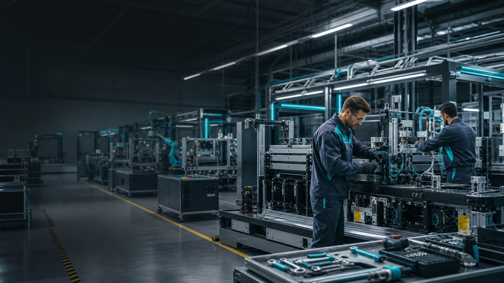

Celdas de ensamble
Subensambles mecanicos, estaciones de fijacion y bancos de prueba listos para integrarse a tu linea.

Maquinaria industrial ensamblada para producir
Ensamblamos, calibramos y ponemos en marcha maquinas industriales para fabricantes que necesitan precision, continuidad y soporte cercano.
Capacidades principales
Subensambles mecanicos, estaciones de fijacion y bancos de prueba listos para integrarse a tu linea.
Cableado, tableros, sensores y verificacion funcional con documentacion tecnica entregable.
Arranque en planta, ajustes finales, capacitacion operativa y soporte durante estabilizacion.
Giro del cliente
Dat Solutions atiende proyectos de automatizacion, empaque, manejo de materiales y estaciones de inspeccion. El foco esta en entregar equipos que lleguen a planta con pruebas, planos y criterios de aceptacion claros.
Metodo de trabajo
Revisamos requerimientos, restricciones de planta y metas de produccion.
Fabricamos y armamos modulos con trazabilidad por componente critico.
Probamos seguridad, repetibilidad y ciclos antes de liberar el equipo.
Instalamos, documentamos y acompanamos el arranque operativo.
Contacto temporal
Comparte tipo de maquina, capacidad requerida, espacio disponible y fecha objetivo. El equipo prepara una cotizacion inicial con alcance tecnico.